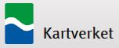
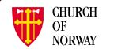

Acknowledgements
NorwayParishes.com offers a special thank you to the following organizations for their help and support with this project. Without their help, guidance and support, this project would not have been possible.
|  | State Mapping Authority of Norway - For providing the municipal and county boundaries in GIS format and the data used to create the parish boundaries on a national scale. Norway and Europe topo web services were also provided courtesy Kartverket. | |
| FamilySearch - Parish maps on a county scale were used as reference to help create a GIS dataset of parish boundaries. FamilySearch also provided valuable information regarding the former jurisdictions of most parishes. | ||
|  | State Church of Norway - Provided valuable information describing how parishes are organized today and offered recommendations on who to contact to obtain current GIS data for parishes. | |
| Kirkesok - All photos of churches as viewed in NorwayParishes.com are courtesy of Kirkesok.no. | ||
| Digital Archives of Norway - For providing official maps of Norway's parishes as they were in 1979 and 1801. The Digital Archives also provided sound guidance for this project. | ||
| National Archives of Norway - For providing guidance and information regarding best practices in conducting genealogical research and the presentation of geographic data relating to that research. | ||
| Leaflet and its developers - The web map contained in NorwayParishes.com was created using the Leaflet JavaScript API. Plugins in this application include code obtained from Leaflet.Control.OSM.Geocoder, Leaflet.label, and Leaflet.NavBar. |
We also thank the City of Oslo's Department of Cultural Affairs and Business Development and the City of Bergen's Department of Urban Development for their help in retrieving and lending GIS data related to this project. Also thanks to the dozens of other municipal governments of Norway who reached out and helped with this project, by either delivering data or offering advice.